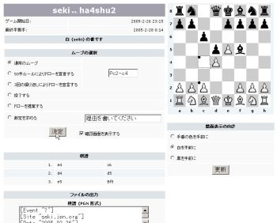

オンラインでじっくりとチェスの対局ができる通信チェスシステムです。制限時間が決まっていませんので、対局者どうしの話し合いにより、じっくりとした対局が可能です。たとえば、１日１手ずつ指し手を進める、といった対局方法が可能です。いわゆる郵便チェスのネット版のようなイメージです。
対局の様子は進行中のゲームからご覧いただくことができます。下の画像は、実際にムーブを進めている様子です。画像をクリックすると拡大します。ここでは、c2のポーンをc4に動かしていますので、マウスでc2, c4を順番にクリックして、決定ボタンを押すことで指し手を進めることができます。PGN形式のファイルが出力されますので、チェスソフトに棋譜を読み込ませることも簡単にできます。
対局相手をみつけて対局を開始するためには、いくつかの方法があります。
相手がムーブを進めたときにメールで通知を受け取ることができます。この機能を利用することにより、ムーブが進んだときにだけチェックすればよくなるので、効率的に対局を進めることができます。
ログインしてゲームを表示すると、ゲームの一番下に「選択可能なイベント」としてこのような表示があらわれます。
| イベントの選択 | ||
|---|---|---|
| カテゴリ | イベント | |
| ゲーム | このゲームでムーブが進んだ時に通知を受け取る | |
| このページにコメントが追加された際に通知する | ||
| このページをブックマークする | ||
| 一般 | 誰かが私に挑戦をしたときに通知を受け取る | |
| 新しく「相手を指定せず挑戦」のゲームが作成された時に通知を受け取る | ||
| 私の挑戦が受け入れられた時に通知を受け取る | ||
ここで「このゲームでムーブが進んだ時に通知を受け取る」にチェックして「今すぐ更新」ボタンを押すと、通知を受け取ることができます。その下の「このページにコメントが追加された際に通知する」にもチェックをすると、コメント欄への投稿があったときにも通知を受け取ることができます。
通知を受け取る方法は、メールとプライベート・メッセージから選択することができます。表の一番下の「通知方法」のところから「変更」をクリックすると、プロフィールの編集画面になりますので、「イベント更新通知メッセージの受取方法」から設定をしてください。
「メール」を選んだときには、メールにて通知を受け取ることができます。「プライベート・メッセージ」を選んだときには、ログインしたときの「受信箱」にて通知を受け取ることができます。チェスのムーブが進んだときにだけログインをする、という使い方をする場合には、メールにて通知を受け取る設定にしておくと便利です。
このページは、旧「千葉チェスのページ」でしたが、千葉チェスの活動は停止し、「 チェス対局システム」のページに変えました。リンクをしてくださっている方はタイトル を変更していただけると助かります。